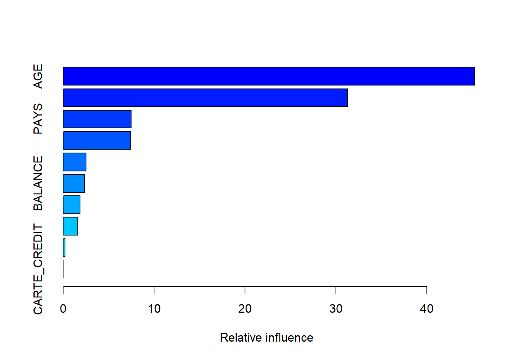
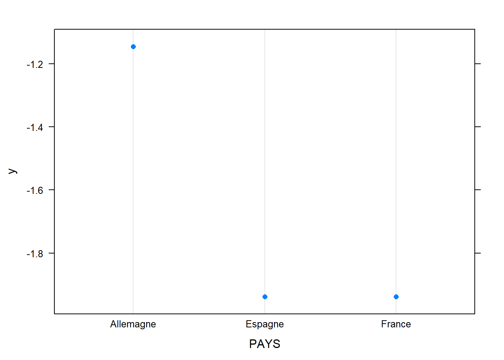
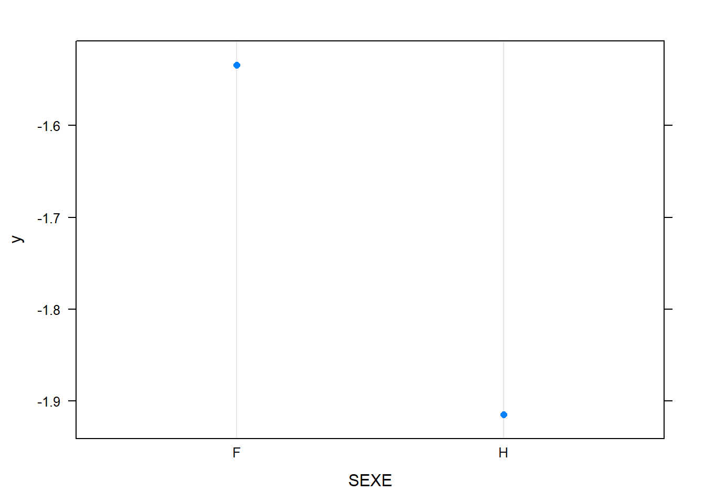
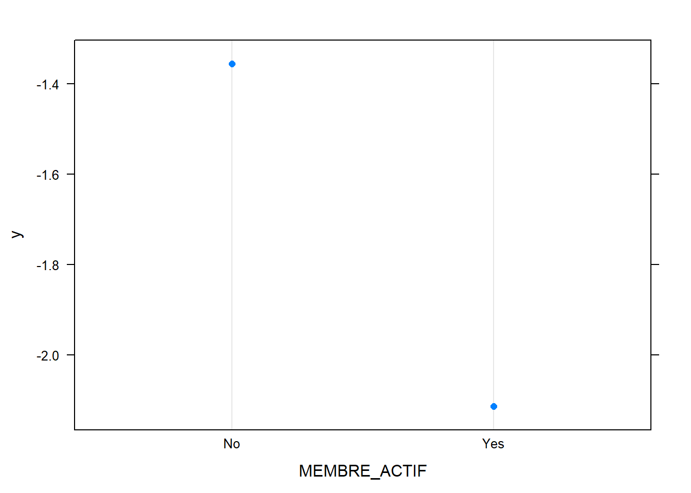
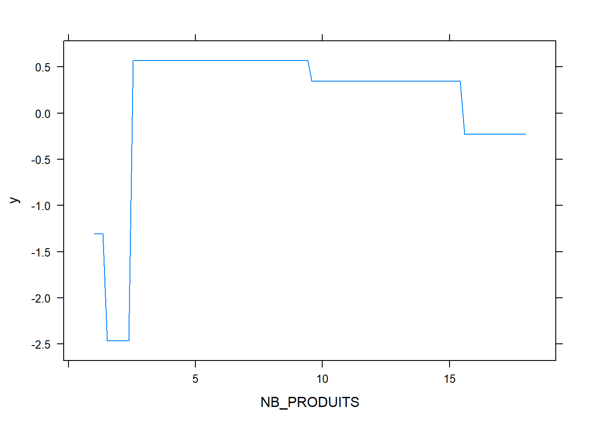

library(data.table)
library(gbm)
library(caret)
library(dplyr)
library(MLmetrics)
library(plotly)
library(pdp)customers = fread("data/customers.csv",encoding = "UTF-8")
indicators = fread("data/indicators.csv",encoding = "UTF-8")
uniqueN(indicators$ID_CLIENT)#On a 9950 individus avec 1 individu par ligne.## [1] 9950uniqueN(customers$ID_CLIENT)## [1] 9950dt = merge(customers,indicators,by="ID_CLIENT")
rm(customers,indicators)
dt = dt[,-c("ID_CLIENT","NOM")]
DT::datatable(head(dt,100)%>%sapply(sample))#on permute les données par colonne parce que la diffusion n'est pas autorisée. Ainsi on peut se faire une idée du contenu des colonnes sans révéler les données sous-jacentes.dt[,DATE_ENTREE:=as.Date(DATE_ENTREE)]
{ggplot(data=dt)+geom_bar(aes(x=year(DATE_ENTREE)))}%>%ggplotlydt[,age_produit:=as.numeric(Sys.Date() - DATE_ENTREE)]
dt = dt[,-c("DATE_ENTREE")]
dt[,id:=1:nrow(dt)]
dt[,group:=sample(1:10,replace=T,nrow(dt))]
dt[,CHURN:=ifelse(CHURN=="Yes",1,0)]
dt = dt%>%mutate_if(is.character,factor)%>%data.table
#vars not needed in the model
useless = c("id","group")On verra après avoir lancé le modèle, en affichant les courbes de dépendance partielle que l’effet salaire est faible et instable avec un risque d’overfitting, ça se passe mieux si on met une contrainte de croissance.
vars = names(dt)
vars = setdiff(vars,"CHURN")
vars = setdiff(vars,useless)
monotony = setNames(rep(0,length(vars)),vars)
monotony['SALAIRE']=1
monotony## PAYS SEXE AGE MEMBRE_ACTIF
## 0 0 0 0
## BALANCE NB_PRODUITS CARTE_CREDIT SALAIRE
## 0 0 0 1
## SCORE_CREDIT age_produit
## 0 0run_model_one_fold_and_predict = function(my_group,params,monotony){
train = dt[!group %in% my_group]
test = dt[group %in% my_group]
model = gbm(data = train[,-useless,with=F],CHURN~.,
distribution = "bernoulli",
var.monotone = monotony,
n.trees = params['ntrees'],verbose = F,
train.fraction = .7,
interaction.depth = params["depth"],
n.minobsinnode = params["nobs_in_node"],
shrinkage = params['shrinkage']
)
best.iter <- suppressMessages({gbm.perf(model, method = "OOB",plot.it = F,oobag.curve = F,overlay = F)})
# print(as.numeric(best.iter))
pred = predict(model,test,type="response",n.trees = best.iter)
quantile(pred,0:10/10)
q80 = quantile(pred,.8)%>%unname
test$pred_prob = pred
test$pred_val = 1*(pred > q80)
test
}run_model_and_evaluate = function(params,monotony){
res = lapply(1:10,run_model_one_fold_and_predict,params=params,monotony=monotony)
res = rbindlist(res)
precision = Precision(y_pred = res$pred_val,y_true = res$CHURN)
acc = Accuracy(y_pred = res$pred_val,y_true = res$CHURN)
recall = Recall(y_pred = res$pred_val,y_true = res$CHURN)
auroc = MLmetrics::AUC(y_pred = res$pred_prob,y_true = res$CHURN)
c(params,"precision"=precision,"recall"=recall,"acc"=acc,"auroc"=auroc)
}monotony['SALAIRE']=0
params = c("depth"=1,"nobs_in_node"=20,"shrinkage"=.1,"ntrees"=200)
run_model_and_evaluate(params,monotony)## depth nobs_in_node shrinkage ntrees
## 1.0000000 20.0000000 0.1000000 200.0000000
## precision recall acc auroc
## 0.8955768 0.8995330 0.8364824 0.8450705monotony['SALAIRE']=1
params = c("depth"=1,"nobs_in_node"=20,"shrinkage"=.1,"ntrees"=200)
run_model_and_evaluate(params,monotony)## depth nobs_in_node shrinkage ntrees
## 1.0000000 20.0000000 0.1000000 200.0000000
## precision recall acc auroc
## 0.8950741 0.8990281 0.8356784 0.8452095params = c("depth"=2,"nobs_in_node"=10,"shrinkage"=.1,"ntrees"=200)
run_model_and_evaluate(params,monotony)## depth nobs_in_node shrinkage ntrees
## 2.0000000 10.0000000 0.1000000 200.0000000
## precision recall acc auroc
## 0.9009926 0.9050865 0.8452261 0.8586001params = c("depth"=4,"nobs_in_node"=10,"shrinkage"=.1,"ntrees"=200)
run_model_and_evaluate(params,monotony)## depth nobs_in_node shrinkage ntrees
## 4.0000000 10.0000000 0.1000000 200.0000000
## precision recall acc auroc
## 0.9019854 0.9059700 0.8467337 0.8588292params = c("depth"=1,"nobs_in_node"=20,"shrinkage"=.1,"ntrees"=200)
useless = c("id","group")
train = dt[,-useless,with=F]
model = gbm(data = train,CHURN~.,
distribution = "bernoulli",
var.monotone = monotony,
n.trees = params['ntrees'],verbose = F,
train.fraction = .7,
interaction.depth = params["depth"],
n.minobsinnode = params["nobs_in_node"],
shrinkage = params['shrinkage']
)
best.iter <- suppressMessages({gbm.perf(model, method = "OOB",plot.it = F,oobag.curve = F,overlay = F)})
# best.itersummary(model)
## var rel.inf
## AGE AGE 45.2306358
## NB_PRODUITS NB_PRODUITS 31.2640936
## PAYS PAYS 7.4736948
## MEMBRE_ACTIF MEMBRE_ACTIF 7.4311385
## SEXE SEXE 2.5169904
## BALANCE BALANCE 2.3776923
## SALAIRE SALAIRE 1.8752356
## SCORE_CREDIT SCORE_CREDIT 1.6282506
## age_produit age_produit 0.2022683
## CARTE_CREDIT CARTE_CREDIT 0.0000000L’examen des dépendances partielles est utile pour évaluer visuellement des risques d’overfitting.
pdply = function(varname){
pdp <- suppressWarnings({partial(model,varname,n.trees = best.iter,plot = T,plot.engine = "ggplot2")})
pdp %>% ggplotly
}
pdply("AGE")## Warning: Use of `object[[1L]]` is discouraged. Use
## `.data[[1L]]` instead.## Warning: Use of `object[["yhat"]]` is discouraged. Use
## `.data[["yhat"]]` instead.pdply("BALANCE")## Warning: Use of `object[[1L]]` is discouraged. Use
## `.data[[1L]]` instead.
## Warning: Use of `object[["yhat"]]` is discouraged. Use
## `.data[["yhat"]]` instead.pdply("SALAIRE")## Warning: Use of `object[[1L]]` is discouraged. Use
## `.data[[1L]]` instead.
## Warning: Use of `object[["yhat"]]` is discouraged. Use
## `.data[["yhat"]]` instead.pdply("SCORE_CREDIT")## Warning: Use of `object[[1L]]` is discouraged. Use
## `.data[[1L]]` instead.
## Warning: Use of `object[["yhat"]]` is discouraged. Use
## `.data[["yhat"]]` instead.pdply("age_produit")## Warning: Use of `object[[1L]]` is discouraged. Use
## `.data[[1L]]` instead.
## Warning: Use of `object[["yhat"]]` is discouraged. Use
## `.data[["yhat"]]` instead.plot.gbm(model,"PAYS")
plot.gbm(model,"SEXE")
plot.gbm(model,"MEMBRE_ACTIF")
plot.gbm(model,"NB_PRODUITS")
plot.gbm(model,"CARTE_CREDIT")On arrive assez facilement à une AUC-ROC de 84%, en augmentant la profondeur on peut arriver à 86% mais on risque du sur-apprentissage et des modèles plus difficiles à interpréter.
On comprend assez bien pourquoi un modèle linéaire a du mal à bien prédire, l’effet marginal de l’âge sur le churn a une forme très lissée de parabole concave. L’ajout des variables age^2 et age^3 peut aider mais ne permet pas d’atteindre les mêmes perfs.